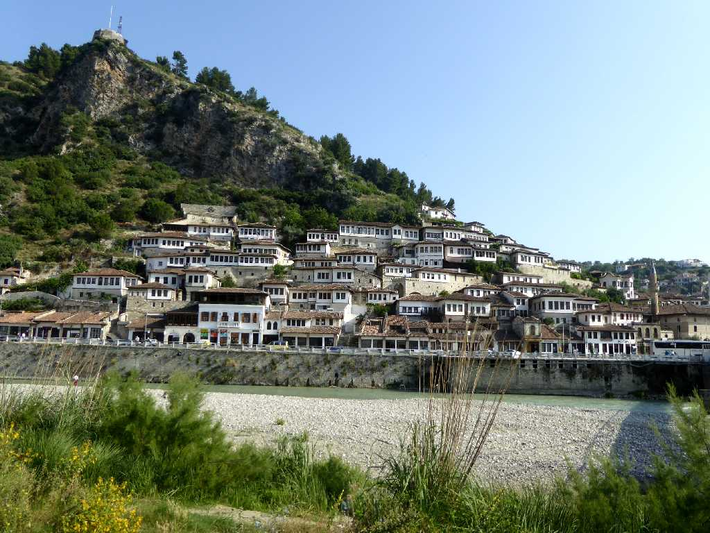
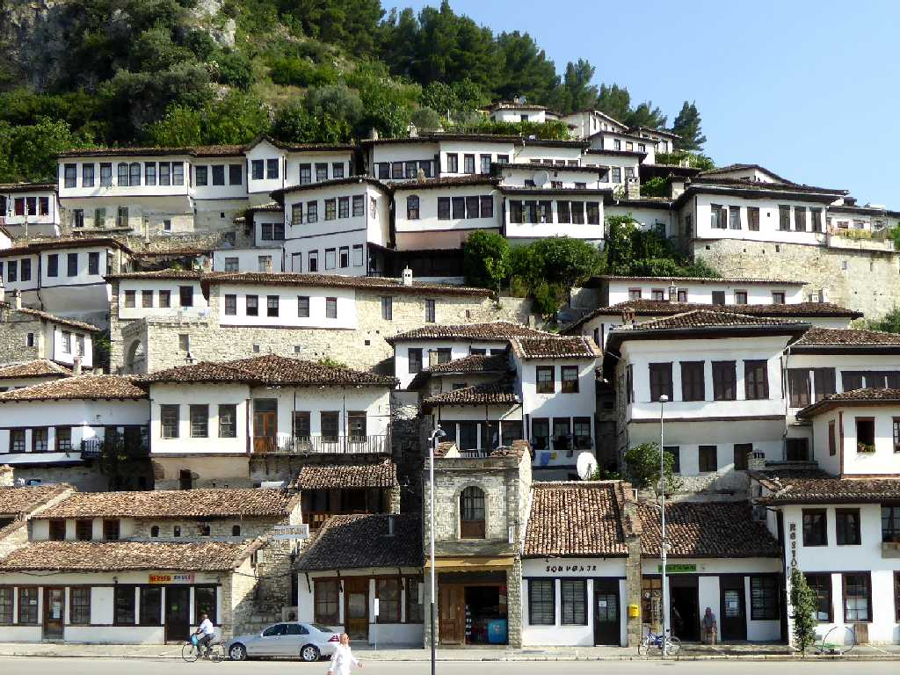
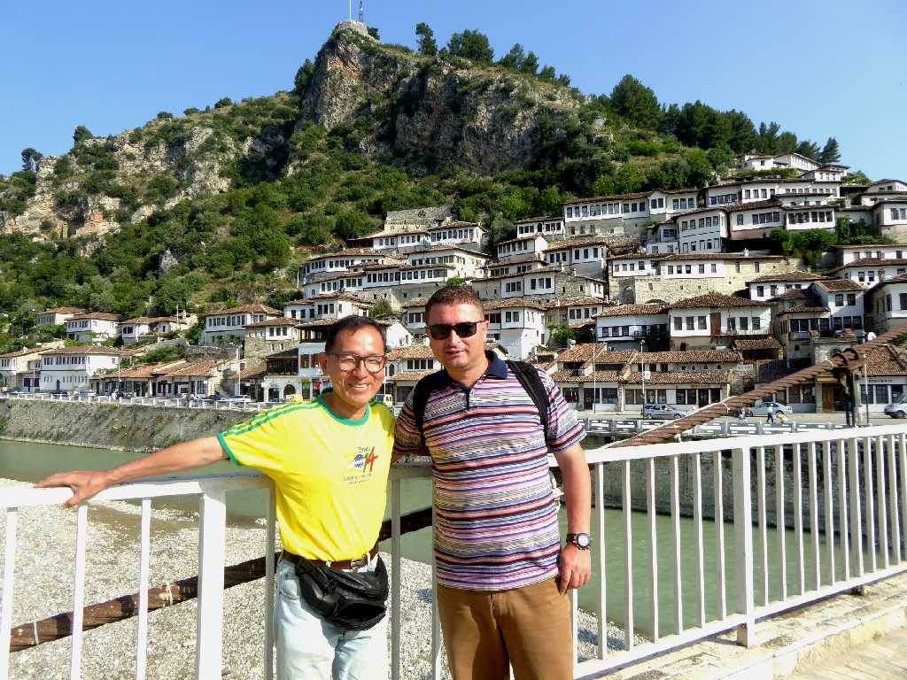
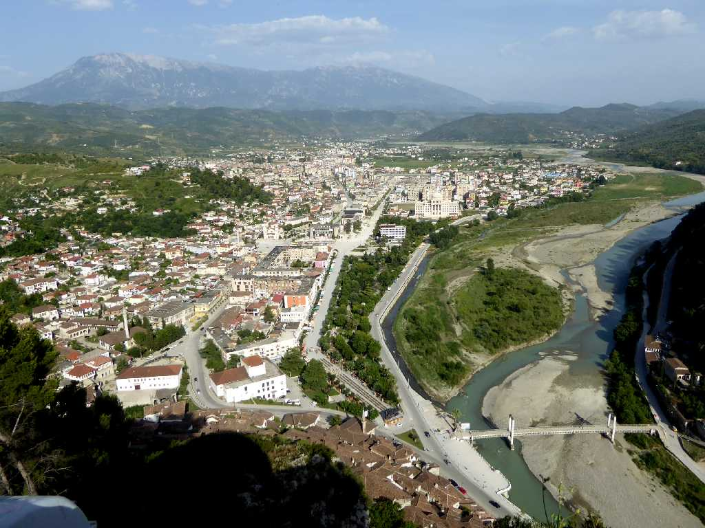
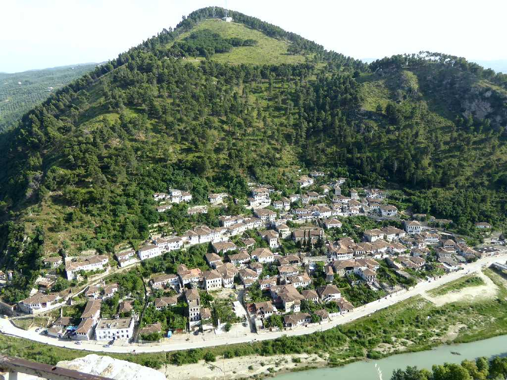
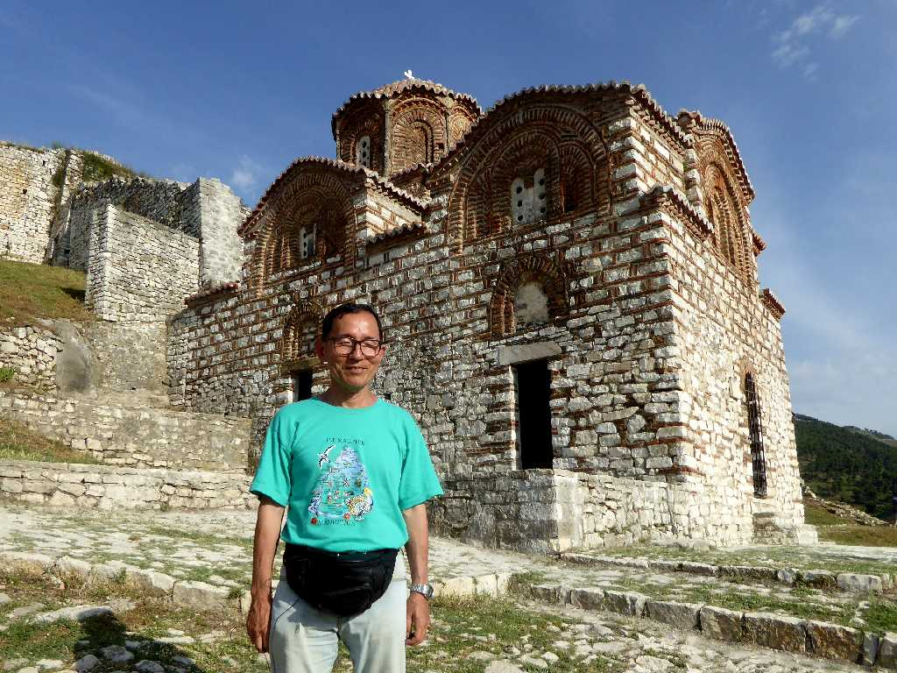

Mangalem Berat
オスミ川河岸に広がる美しい要塞都市ベラトは千の窓の町と呼ばれている

1,000 Dritareve Mangalem
要塞都市ベラトはＢＣ４世紀にアレキサンダー大王の武将が創りビザンチン時代にプリケリオポリス(美しい街の意)として栄えプルガリア帝国時代は白い町と呼ばれていた

June 26 2016 Mangalem

Mangalem Osum River Berat

Gorica Berat

June 25 2016 Holy Trinity Church Berat